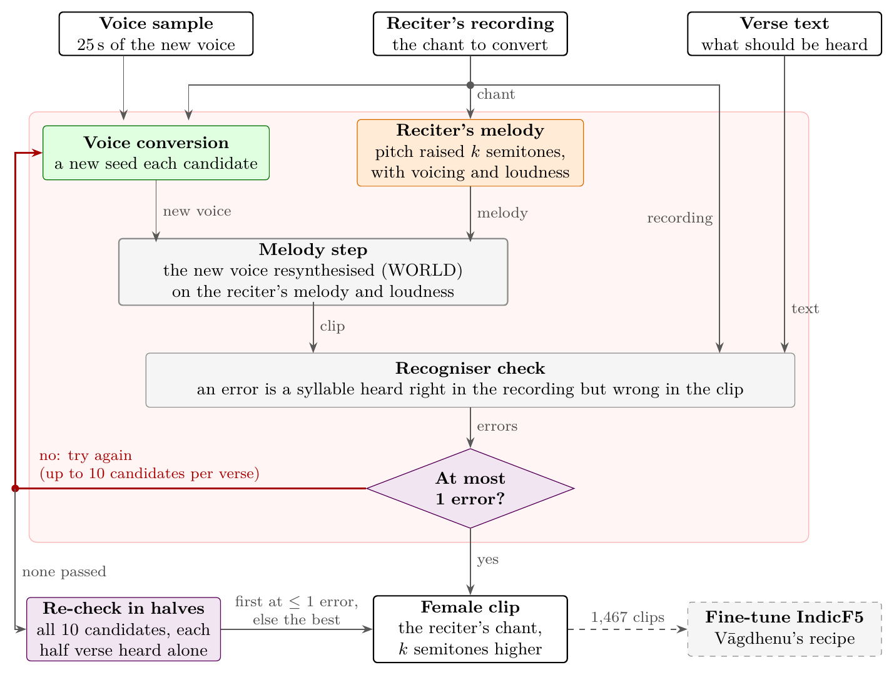

॥ नन्दिनी ॥
A female voice for Vāgdhenu's Sanskrit chant, built from its own recordings without recording a female reciter.
⚠ For classical (non-Vedic) verse only. Remove accent and other diacritical marks before pasting the text.
Paste a Sanskrit verse in any Indian script and choose a voice: Nandinī, Vāgdhenu, or both side by side.
The first chant takes a minute or two while the models load. If the demo doesn't appear, open it in its own tab ↗.
Vāgdhenu's six sample verses, chanted by Nandinī and by Vāgdhenu.
नारायणाय परिपूर्णगुणार्णवाय विश्वोदयस्थितिलयोन्नियतिप्रदाय ।
ज्ञानप्रदाय विबुधासुरसौख्यदुःखसत्कारणाय वितताय नमोनमस्ते
जन्माद्यस्य यतोऽन्वयादितरतश्चार्थेष्वभिज्ञः स्वराट् तेने ब्रह्म हृदा य आदिकवये मुह्यन्ति यं सूरयः। तेजोवारिमृदां यथा विनिमयो यत्र त्रिसर्गो मृषा धाम्ना स्वेन सदा निरस्तकुहकं सत्यं परं धीमहि
नैमिषेऽनिमिषक्षेत्रे ऋषयः शौनकादयः। सत्रं स्वर्गाय लोकाय सहस्रसममासत
पश्यन्त्यदो रूपमदभ्रचक्षुषः सहस्रपादोरुभुजाननाद्भुतम्। सहस्रमूर्धश्रवणाक्षिनासिकं सहस्रमौल्यम्बरकुण्डलोल्लसत्
निगमकल्पतरोर्गलितं फलं शुकमुखादमृतद्रवसंयुतम्। पिबत भागवतं रसमालयं मुहुरहो रसिका भुवि भावुकाः
हठलुठ दल घिष्टोत्कण्ठदष्टोष्ठ विद्युत् सटशठ कठिनोरः पीठभित्सुष्ठुनिष्ठाम् ।
पठतिनुतव कण्ठाधिष्ठ घोरान्त्रमाला दह दह नरसिंहासह्यवीर्याहितं मे ॥
Both voices are rendered the same way, through Vāgdhenu's renderer with his website's settings and seed 60. The meter is detected, except for the last three verses, where the detector misses it and the meter is chosen as in the demo's Advanced options. Vāgdhenu here is the model his website serves.
Four of the sixty verses used to compare the two models, from the Bhāgavata Purāṇa and the Mukundamālā.
हिरण्मयः स पुरुषः सहस्रपरिवत्सरान् आण्डकोश उवासाप्सु सर्वसत्त्वोपबृंहितः
एवं मृशन्त ऋषयो धावतां सर्वतोदिशम् पांसुः समुत्थितो भूरिश्चोराणामभिलुम्पताम्
यदङ्घ्र्यभिध्यानसमाधिधौतया धियानुपश्यन्ति हि तत्त्वमात्मनः वदन्ति चैतत्कवयो यथारुचं स मे मुकुन्दो भगवान्प्रसीदताम्
नाहं वन्दे तव चरणयोर्द्वन्द्वमद्वन्द्वहेतोः कुम्भीपाकं गुरुमपि हरे नारकं नापनेतुम् रम्या रामा मृदुतनुलता नन्दने नापि रन्तुं भावे भावे हृदयभवने भावयेऽहं भवन्तम्
Verse texts from the Digital Corpus of Sanskrit (Oliver Hellwig, CC BY 4.0). Vāgdhenu here is his released fine-tune, trained the same way as Nandinī. The texts have no daṇḍas, so each model chooses where to pause.
No new recordings: every clip of Vāgdhenu's corpus was remade in a female voice, keeping its chant.

Limitations. Every error rate comes from the same recogniser that chose the training clips, so the rates are optimistic. The tune was judged by one listener, not in a controlled listening study. Nandinī sometimes pauses in different places from Vāgdhenu.
One command chants a verse, on a GPU, on Apple silicon, or on a CPU without PyTorch.
git clone https://github.com/ram-g-athreya/nandini && cd nandini
scripts/setup_pytorch.sh # or setup_onnx.sh (no PyTorch), setup_mlx.sh (Apple silicon)
uv run nandini chant --text "वसुदेवसुतं देवं कंसचाणूरमर्दनम् । देवकीपरमानन्दं कृष्णं वन्दे जगद्गुरुम् ॥" --out out.wav
uv run nandini chant --backend onnx --text "..." # --compact for the smaller files
uv run nandini chant --backend mlx --text "..."